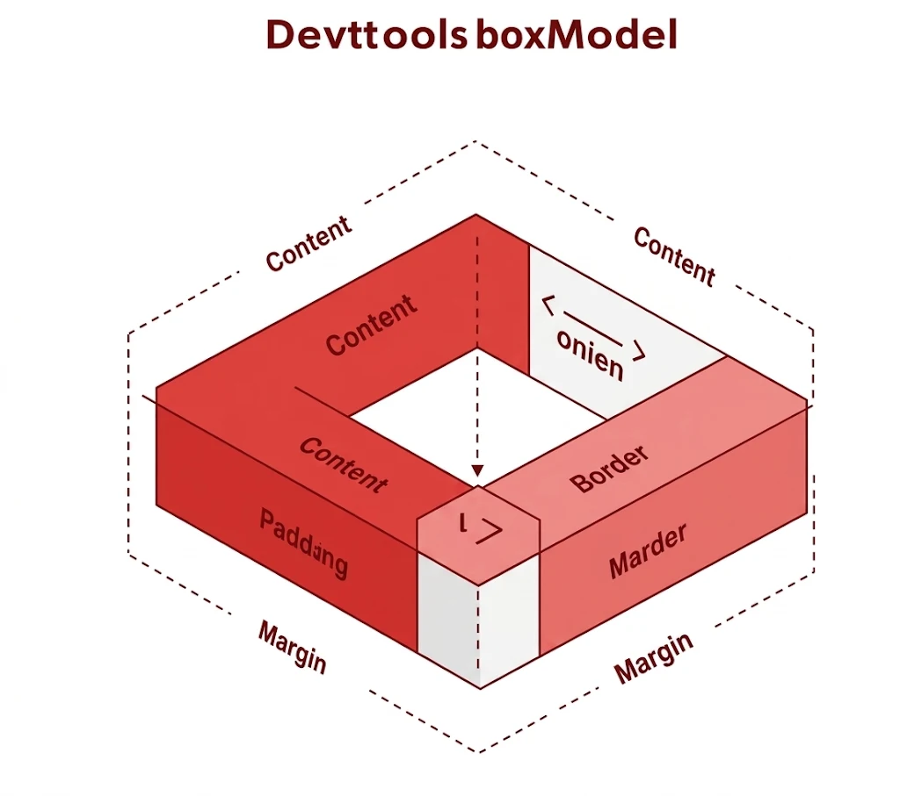

Box Model en CSS: guía completa para frontend
Si alguna vez te has preguntado por qué un botón no se alinea como esperas o por qué un div tiene más espacio del que debería, el Box Model tiene la respuesta. En este artículo exploraremos cómo funciona y cómo puedes usarlo para construir diseños más precisos y profesionales.
¡Vamos a desglosarlo paso a paso para que domines el Box Model como toda una experta en CSS!
¿Qué es el Box Model?
Imagina que cada elemento HTML de tu página web es una caja. Pero esta caja no es solo el contenido que ves: en realidad está compuesta por varias capas que definen su tamaño y su espacio en la página. Estas capas son:
1. Content (contenido)
Es el corazón del elemento, donde se muestra el texto, las imágenes u otros medios.
2. Padding (relleno)
El espacio entre el contenido y el borde.
3. Border (borde)
El límite que rodea el padding y el contenido.
4. Margin (margen)
El espacio exterior que separa el elemento de otros elementos de la página.
